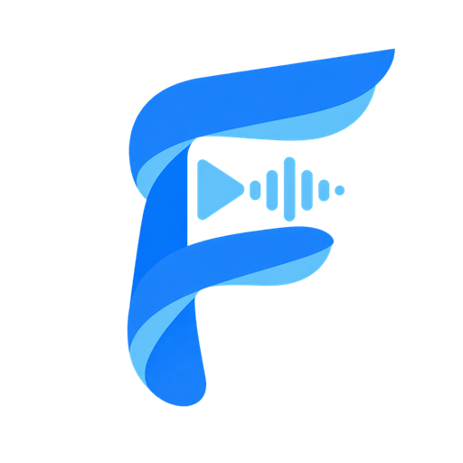

FlixTunesLe serveur ne répond pas
FlixTunes n'a pas réussi à joindre le serveur enregistré.
C'est le plus souvent un NAS qui n'a pas fini de démarrer, ou un réseau qui revient.
Nouvel essai automatique toutes les cinq secondes…
Si cela dure, le journal dit ce qui s'est passé :